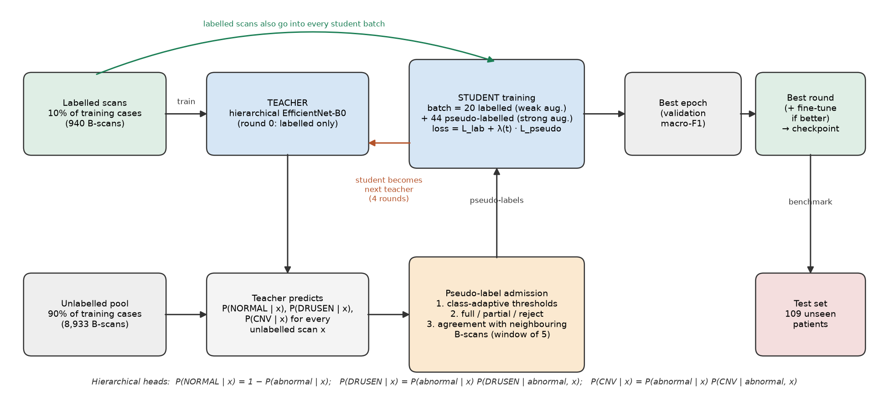
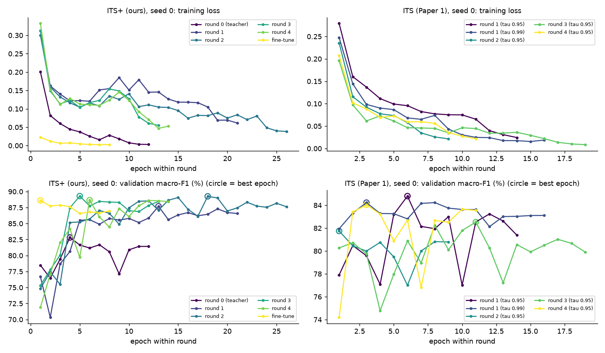
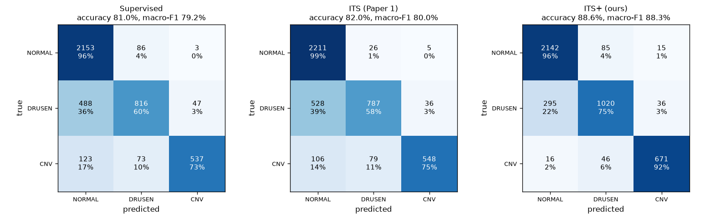
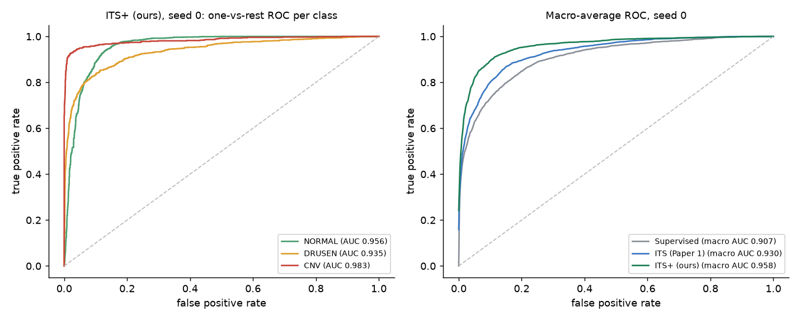
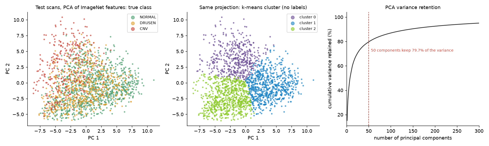

Abstract—Expert grading of retinal optical coherence tomography (OCT) is slow and costly, so most OCT archives are mostly unlabelled. We classify single OCT B-scans as NORMAL, DRUSEN or CNV (choroidal neovascularisation) on the public NEH_UT_2021 dataset in a setting where only 10% of the training patients are labelled: 940 labelled and 8,933 unlabelled B-scans. Our method, ITS+, extends iterative teacher–student pseudo-labelling (ITS) with a normal/abnormal → drusen/CNV classifier, class-specific thresholds, “abnormal, subtype unknown” partial labels, agreement with neighbouring B-scans and a gradually introduced pseudo-label loss. On 4,326 test B-scans from 109 held-out cases, averaged over three random seeds, ITS+ reaches 85.90 ± 2.84% accuracy and 85.64% macro-F1, compared with 82.15% for ITS, 80.64% for supervised training on the labelled scans alone and 50.62% for unsupervised k-means clustering. It also lowers the share of diseased scans predicted as normal from 23.94% to 14.64%.
Index Terms—optical coherence tomography, semi-supervised learning, pseudo-labelling, teacher–student training, hierarchical classification, EfficientNet.
Age-related macular degeneration (AMD) is a leading cause of vision loss in older adults. On OCT it appears as drusen, deposits under the retinal pigment epithelium typical of the dry form, or as CNV, abnormal vessel growth typical of the wet form, which needs prompt treatment. Convolutional neural networks (CNNs) grade OCT scans accurately when about 100,000 labelled images are available [13], but every label must come from an ophthalmologist. Semi-supervised learning (SSL) also learns from images that have no label.
Our task is: given one grayscale OCT B-scan, predict NORMAL, DRUSEN or CNV, when only 10% of the training patients have labels. Calling a diseased scan normal (under-grading) is the most harmful error, because the patient would not be referred. We (i) re-implement ITS [1] as the semi-supervised baseline, (ii) extend it to ITS+ with the hierarchical classifier and three-way pseudo-label admission of [2] and the loss ramp-up and fine-tuning of [3], and (iii) evaluate all models over three seeds on a patient-level split, with an ablation, an unsupervised clustering reference and an error analysis.
Pseudo-labelling and self-training. In pseudo-labelling, a network trained on labelled data assigns its own predictions as targets to unlabelled data [6]. Noisy Student training [9] repeats this with a student that becomes the next teacher. FixMatch [7] keeps a pseudo-label only when the prediction on a weakly augmented image is confident and trains on a strongly augmented copy; FlexMatch [8] replaces the single threshold with class-wise thresholds that follow how well each class is learnt.
Papers studied for this project. Alizadeh et al. [1] apply iterative teacher–student training (ITS) to NEH_UT_2021 with EfficientNet-B0 [5]. A teacher trained on the labelled subset gives hard labels to unlabelled scans whose top probability exceeds a threshold; a student trained on both replaces the teacher for several rounds. With 5% and 20% of the labels, ITS improves accuracy from 54.78% to 64.15% and from 77.05% to 88.56%. Akash et al. [2] (TRIAGE) treat pseudo-label admission as a risk decision. They use a hierarchical normal/abnormal and drusen/CNV classifier, accept, partially accept or reject each pseudo-label, and check it against a Transformer that sees neighbouring B-scans. They report 76.88% (5%) and 89.66% (20%) accuracy on the same dataset. Tan et al. [3] combine pseudo-labels with sub-domain adaptation on other OCT datasets. They introduce the pseudo-label loss gradually and finish with fine-tuning on the true labels.
The dataset [4] was collected at Noor Eye Hospital. Its metadata lists 16,822 B-scans; 16,803 image files could be matched and checked. Images are stored in three class folders, one sub-folder per patient (a case), with 441 cases and 554 volumes (one volume is one 3-D scan of one eye). Each B-scan also carries its own label, and that label differs from the folder name for 24.8% of the scans: a CNV eye, for example, contains many slices that look normal. We therefore use the per-B-scan label as the target. Seven cases (208 images, all from the CNV and DRUSEN folders) store the scan as a small picture inside a large black frame. We removed them, because a network could learn “black frame means diseased” instead of learning the disease itself.
Whole cases are assigned to training (60%), validation (15%) and test (25%) sets, so no patient appears in two sets. Four pairs of cases share byte-identical images (checked with MD5 hashes); each pair is kept in the same set. Inside the training cases, 10% of the cases keep their labels and the rest form the unlabelled pool (Table I). Each seed draws a different labelled subset (940, 972 and 981 scans for seeds 0, 1 and 2), while the validation and test sets stay fixed.
| Set | Cases | NORMAL | DRUSEN | CNV | Total |
|---|---|---|---|---|---|
| Labelled (10%, seed 0) | 25 | 466 | 276 | 198 | 940 |
| Unlabelled pool | 234 | 4,645 | 2,524 | 1,764 | 8,933 |
| Validation | 66 | 1,200 | 723 | 473 | 2,396 |
| Test | 109 | 2,242 | 1,351 | 733 | 4,326 |
Each image is converted to grayscale, and the scale bar printed in its lower-left corner is set to black so that it cannot act as a cue. The retina is then located: the image is smoothed with a Gaussian filter (σ = 4), thresholded with Otsu’s method [12] and cleaned with a morphological opening. A band of 352 rows (full image width) centred on the detected retina is cropped, resized to 224 × 224 pixels and normalised with the ImageNet mean and standard deviation. Detection succeeded on all 16,803 images.
Fig. 1 summarises ITS+. All models share one backbone: EfficientNet-B0 [5] pre-trained on ImageNet, whose convolutional part (4.0 M parameters) maps a scan \(x\) to a 1,280-dimensional feature vector, followed by dropout (0.2).

Round 0 trains a teacher on the labelled set \(\mathcal{L}\). In each round \(r = 1,\dots,4\) the teacher outputs class probabilities \(\mathbf{p}(x) = [P(\mathrm{N}\mid x), P(\mathrm{D}\mid x), P(\mathrm{C}\mid x)]\) for every scan \(x\) in the unlabelled pool \(\mathcal{U}\). Here N, D and C stand for NORMAL, DRUSEN and CNV. Scans that pass the admission rule get the pseudo-label \(\hat y(x) = \arg\max_c P(c\mid x)\). A new student, initialised from ImageNet weights, is trained on \(\mathcal{L}\) and the admitted scans, and then becomes the teacher of round \(r+1\). In the baseline ITS the network has one 3-way softmax output, and a scan is admitted when \(\max_c P(c\mid x) \ge \tau\). The threshold \(\tau \in \{0.95, 0.99\}\) is chosen in round 1 by validation macro-F1; 0.95 was chosen for all three seeds.
ITS+ replaces the single output layer with two linear heads on the shared features, each followed by a 2-way softmax. With A denoting “abnormal” (DRUSEN or CNV), the first head gives \(a(x) = P(\mathrm{A}\mid x)\) and the second gives \(q(x) = P(\mathrm{C}\mid \mathrm{A}, x)\), the probability of CNV given that the scan is abnormal, so \(P(\mathrm{D}\mid\mathrm{A},x) = 1-q(x)\). The chain rule of probability gives the three class probabilities:
$$P(\mathrm{N}\mid x) = 1 - P(\mathrm{A}\mid x) = 1 - a(x) \tag{1}$$ $$P(\mathrm{D}\mid x) = P(\mathrm{A}\mid x)\,P(\mathrm{D}\mid \mathrm{A},x) = a(x)\,\big(1-q(x)\big) \tag{2}$$ $$P(\mathrm{C}\mid x) = P(\mathrm{A}\mid x)\,P(\mathrm{C}\mid \mathrm{A},x) = a(x)\,q(x) \tag{3}$$The three values are non-negative and sum to one. The normal-versus-abnormal decision, which decides referral, now has its own head instead of sharing one softmax with the drusen/CNV choice.
A full label \(y \in \{\mathrm{N},\mathrm{D},\mathrm{C}\}\) uses the negative log-likelihood. A partial label (“abnormal, subtype unknown”) only states that the scan is abnormal, so its loss is the negative log of the abnormal probability:
$$\ell(x,y) = \begin{cases} -\log P(y\mid x), & \text{full label} \\ -\log a(x), & \text{partial label} \end{cases} \tag{4}$$By (2) and (3), \(P(\mathrm{D}\mid x)+P(\mathrm{C}\mid x) = a(x)\), so the partial-label loss \(-\log\big(P(\mathrm{D}\mid x)+P(\mathrm{C}\mid x)\big)\) equals \(-\log a(x)\) and updates only the normal/abnormal head. To counter class imbalance, each loss is weighted by the inverse frequency of its class in \(\mathcal{L}\), which holds \(N\) scans, \(N_c\) of them of class \(c\):
$$\mathcal{L} = \frac{\sum_i w_{y_i}\,\ell(x_i,y_i)}{\sum_i w_{y_i}},\qquad w_c = \frac{N}{3N_c} \tag{5}$$and a partial label gets \(w_{\text{partial}} = \tfrac12(w_{\mathrm{D}} + w_{\mathrm{C}})\). For seed 0 this gives \(w_{\mathrm{N}} = 0.67\), \(w_{\mathrm{D}} = 1.14\) and \(w_{\mathrm{C}} = 1.58\).
Class-adaptive thresholds. A single threshold admits many scans of easy classes and few of hard ones. For each class \(c\), let \(\pi_c\) be its share of \(\mathcal{L}\). The learning status \(s_c\) is the number of pool scans already predicted as \(c\) with confidence at least \(\tau_{hi}\), divided by the number of class-\(c\) scans expected in the pool. Each class threshold is then interpolated between \(\tau_{lo}\) and \(\tau_{hi}\):
$$\begin{aligned} s_c &= \frac{\big|\{x\in\mathcal{U} : \hat y(x) = c,\ \max_k P(k\mid x)\ge\tau_{hi}\}\big|}{\pi_c\,|\mathcal{U}|} \\ \tau_c &= \tau_{lo} + (\tau_{hi}-\tau_{lo})\,\frac{s_c}{\max_k s_k} \end{aligned} \tag{6}$$with \(\tau_{lo} = 0.90\) and \(\tau_{hi} = 0.98\). The best-learnt class keeps the strict threshold 0.98, and classes that lag behind get a lower one.
Full, partial or reject. A scan becomes a full label if \(\max_c P(c\mid x) \ge \tau_{\hat y}\) and, when \(\hat y\) is DRUSEN or CNV, the subtype is also clear: \(\max\big(q(x), 1-q(x)\big) \ge \tau_f = 0.80\). Otherwise it becomes a partial label if \(a(x) \ge \min(\tau_{\mathrm{D}}, \tau_{\mathrm{C}})\), meaning the teacher is sure the scan is abnormal but not which disease it shows. Every other scan is rejected.
Volume agreement. Neighbouring B-scans of one eye usually share a diagnosis. For pool scan \(i\), let \(W_i\) contain the scan itself and up to two B-scans on each side of it in the same volume. The teacher’s probabilities are averaged over \(W_i\):
$$\bar{\mathbf{p}}_i = \frac{1}{|W_i|}\sum_{j\in W_i}\mathbf{p}(x_j),\qquad \bar a_i = \bar p_{i,\mathrm{D}} + \bar p_{i,\mathrm{C}} \tag{7}$$A full label is kept only if \(\arg\max_c \bar p_{i,c} = \hat y_i\). A full DRUSEN or CNV label that fails this test but has \(\bar a_i \ge 0.5\) is downgraded to a partial label, and every partial label needs \(\bar a_i \ge 0.5\). This is a simple, training-free stand-in for the Transformer context teacher of [2].
Each ITS+ batch of 64 holds 20 labelled scans with weak augmentation (random flip, rotation up to 10°, random crop to 85–100% of the image, shift up to 3%, shear up to 5°) and 44 pseudo-labelled scans with strong augmentation (flip, rotation up to 20°, scale 0.70–1.10, shift up to 5%, shear up to 10°, random contrast, brightness and gamma, and one Cutout square [11] covering 20–40% of the side). ITS and variants A–C instead train on one pooled, weakly augmented set. Early pseudo-labels are not trusted fully: the pseudo-label loss is switched on gradually over the epochs \(t = 1, 2, \dots\), with the zero–linear–constant shape of [3] rescaled to our 30-epoch schedule:
$$\begin{aligned} \mathcal{L}_t &= \mathcal{L}_{\text{lab}} + \lambda(t)\,\mathcal{L}_{\text{pse}} \\ \lambda(t) &= \min\!\Big(1, \max\!\Big(0, \frac{t-3}{6}\Big)\Big) \end{aligned} \tag{8}$$so \(\lambda = 0\) for epochs 1–3 and \(\lambda = 1\) from epoch 9. After the four rounds, the best student is fine-tuned on \(\mathcal{L}\) only, for up to 8 epochs at learning rate \(10^{-4}\). The fine-tuned model is kept only if its validation macro-F1 is higher [3]; this happened for seed 2 only.
To measure how much structure exists without any training labels, we extract ImageNet EfficientNet-B0 features of all training scans, reduce them with principal component analysis (PCA) to \(K = 50\) components and cluster them with k-means (\(k = 3\)), which minimises \(\sum_i \lVert \mathbf{z}_i - \boldsymbol{\mu}_{c(i)} \rVert^2\). The variance retained by the first \(K\) components, with eigenvalues \(\lambda_1 \ge \lambda_2 \ge \dots\) of the feature covariance matrix, is
$$\text{retained}(K) = \frac{\sum_{k=1}^{K}\lambda_k}{\sum_{k}\lambda_k} \tag{9}$$which is 79.7% for \(K = 50\). Validation labels are used only to name the clusters, by a one-to-one cluster–class matching that maximises validation agreement (Hungarian algorithm).
All networks use the settings in Table II, on a 4 GB NVIDIA RTX 3050 laptop GPU; the schedule is shorter than the 100 epochs of [1] but identical for every model. Each model is trained with seeds 0, 1 and 2. Only the validation set selects the best epoch, round and ITS threshold; the test set is used once per model.
| Setting | Value |
|---|---|
| Optimiser, learning rate | Adam [10], \(10^{-3}\) |
| Batch size; minimum steps per epoch | 64; 100 |
| Learning-rate schedule | ×0.1 after 5 epochs without gain |
| Early stopping; maximum epochs | 8 epochs without gain; 30 |
| Selection criterion | validation macro-F1 |
| Teacher–student rounds | 4 |
| \(\tau_{lo}, \tau_{hi}, \tau_f\); window \(|W_i|\) | 0.90, 0.98, 0.80; up to 5 |
| Precision | mixed (float16) |
Metrics. With precision \(P_c\) and recall \(R_c\) of class \(c\), we report accuracy, macro-F1, one-vs-rest macro-AUC and the under-grading rate (UGR):
$$\begin{aligned} \text{macro-F1} &= \frac13\sum_{c}\frac{2P_cR_c}{P_c+R_c} \\ \text{UGR} &=\frac{\big|\{i : y_i\in\{\mathrm{D},\mathrm{C}\},\ \hat y_i = \mathrm{N}\}\big|}{\big|\{i : y_i\in\{\mathrm{D},\mathrm{C}\}\}\big|} \end{aligned} \tag{10}$$Macro-F1 weights the three classes equally, which matters because 51.8% of the test scans are NORMAL. A model that ignored DRUSEN could still reach high accuracy, but not high macro-F1. For each model, a 95% confidence interval is obtained by resampling whole test cases with replacement 1,000 times, because scans of one patient are not independent.
Table III compares the three kinds of learning on the same test set. Using the unlabelled scans helps: ITS improves on supervised training by 1.51 points, and ITS+ improves on ITS by 3.75 accuracy points, 4.61 macro-F1 points and 6.20 UGR points. ITS+ beats ITS on every seed (+6.63, +3.81 and +0.79 points). For seed 0, ITS+ reaches 88.60% accuracy with a 95% confidence interval of 85.6–91.3%. Unsupervised k-means is far behind at 50.62%. Our 10% result lies between the 5% and 20% results of [1], [2] (Section II), although their splits differ, so that comparison is only indicative.
| Model | Accuracy | Macro-F1 | AUC | UGR↓ |
|---|---|---|---|---|
| k-means (unsup.) | 50.62±0.01 | 49.27±0.03 | 69.41±0.01 | 24.98±0.10 |
| Supervised (flat) | 80.64±0.39 | 79.31±1.14 | 91.29±0.58 | 23.94±5.35 |
| Supervised (hier.) | 81.61±0.45 | 80.68±1.17 | 92.20±1.24 | 17.16±5.14 |
| ITS [1] | 82.15±0.18 | 81.03±1.86 | 93.53±0.54 | 20.84±10.42 |
| ITS+ (ours) | 85.90±2.84 | 85.64±3.37 | 94.79±1.59 | 14.64±5.33 |
Table IV adds the ITS+ components one at a time. The hierarchical classifier gives the largest gain (+2.49 points) and the largest fall in UGR (20.84% to 15.26%). The remaining components raise pseudo-label precision from 89.52% to 91.47% but together add only about 1.3 accuracy points. That is less than the seed-to-seed standard deviation (2.84), so with three seeds we cannot show that each of them helps on its own.
| Configuration (cumulative) | Acc. | Δ | UGR | PL prec. |
|---|---|---|---|---|
| ITS [1] | 82.15 | – | 20.84 | 87.31 |
| A: + hierarchical classifier | 84.64 | +2.49 | 15.26 | 89.52 |
| B: + adaptive thresholds, partial labels | 84.67 | +0.03 | 15.47 | 90.23 |
| C: + volume agreement | 85.27 | +0.59 | 15.75 | 89.90 |
| D: + strong aug., ramp, fine-tune | 85.90 | +0.63 | 14.64 | 91.47 |

The round-0 teacher (Fig. 2) drives its training loss from 0.20 to 0.003 in 12 epochs, while its validation macro-F1 peaks at epoch 4 (82.82%) and then falls. This is clear over-fitting of 940 labelled scans; early stopping keeps epoch 4. Student losses stay higher (mostly 0.05–0.18 after the first epoch) because their batches contain strongly augmented and sometimes wrong pseudo-labels, and in round 1 the loss rises between epochs 4 and 9 as \(\lambda(t)\) grows. Validation macro-F1 still climbs, to 87.70% in round 1 and 89.29% in round 3, so the pseudo-labels act as a regulariser rather than as noise. ITS curves fluctuate more and stay between 74% and 85%. The pseudo-labels explain why: across rounds 1–4 of seed 0, 90.4–93.9% of the ITS+ full pseudo-labels are correct, against 86.4–88.5% for ITS. ITS+ validation macro-F1 levels off after round 2 (89.25%, 89.29%, 88.65%), so further rounds would add little.
Fig. 3 breaks down the seed-0 errors. For the supervised model and ITS, the dominant error is DRUSEN predicted as NORMAL (488 and 528 of 1,351 drusen scans, 36.1% and 39.1%), followed by CNV predicted as NORMAL (123 and 106 of 733). ITS+ reduces these to 295 (21.8%) and 16 (2.2%). Its seed-0 UGR is 14.9%, against 29.3% for the supervised model and 30.4% for ITS. ITS+ pays for this with slightly more false alarms: 85 NORMAL scans are called DRUSEN, against 26 for ITS. Confusion between the two diseases is small (36 DRUSEN→CNV and 46 CNV→DRUSEN).
Averaged over seeds, ITS+ raises drusen recall from 65.1% (ITS) to 73.1% and CNV recall from 84.5% to 92.3%, while NORMAL recall stays at 91.5%, and its per-class precision is higher than that of ITS for every class (NORMAL 87.3%, DRUSEN 81.9%, CNV 89.7%). The ROC curves (Fig. 4) agree: CNV is the easiest class (AUC 0.983) and DRUSEN the hardest (0.935). We see two likely causes. First, small drusen produce only slight bumps of the pigment epithelium, which are hard to see after down-sampling the scan to 224 pixels. Second, the labels are per B-scan, so slices at the edge of a drusen region look almost normal; part of this error is therefore label ambiguity rather than model failure.


In the PCA projection of ImageNet features (Fig. 5) the three classes overlap heavily, and the k-means clusters divide the plane into three regions that do not follow the class boundaries. Generic image features therefore do not separate the diseases by themselves (50.62% accuracy, close to always predicting NORMAL at 51.8%). Some labelled supervision is necessary, and SSL makes the most of a small amount of it.

With labels for only 10% of the training patients, iterative teacher–student pseudo-labelling improves on supervised training. ITS+ reaches 85.90% accuracy, 85.64% macro-F1 and a 14.64% under-grading rate over three seeds, against 82.15%, 81.03% and 20.84% for ITS. The hierarchical classifier is the most effective addition, the gain comes with more accurate pseudo-labels (91.47% vs. 87.31%), and most remaining errors are subtle drusen.
[1]A. Alizadeh, A. Alenezi, N. Khakestari, Y. Amizadeh, and A. Jodeiri, “Investigating the impact of semi-supervised learning methods to improve the quality of diagnosis of retinal diseases from OCT images,” Diagnostics, vol. 16, no. 5, Art. no. 656, 2026, doi: 10.3390/diagnostics16050656.
[2]M. A. H. Akash, S. Afroge, A. Al Mamun, M. K. Morol, and T. H. Liew, “TRIAGE: Risk-controlled pseudo-label admission for annotation-efficient semi-supervised retinal OCT classification,” arXiv:2608.14321, Aug. 2026.
[3]Z. Tan, Q. Zhang, G. Lan, J. Xu, C. Ou, L. An, J. Qin, and Y. Huang, “OCT retinopathy classification via a semi-supervised pseudo-label sub-domain adaptation and fine-tuning method,” Mathematics, vol. 12, no. 2, Art. no. 347, 2024, doi: 10.3390/math12020347.
[4]S. Sotoudeh-Paima, F. Hajizadeh, and H. Soltanian-Zadeh, “Labeled retinal optical coherence tomography dataset for classification of normal, drusen, and CNV cases,” Mendeley Data, V1, 2021, doi: 10.17632/8kt969dhx6.1.
[5]M. Tan and Q. V. Le, “EfficientNet: Rethinking model scaling for convolutional neural networks,” in Proc. 36th Int. Conf. Mach. Learn. (ICML), 2019, pp. 6105–6114.
[6]D.-H. Lee, “Pseudo-label: The simple and efficient semi-supervised learning method for deep neural networks,” in Proc. ICML Workshop Challenges Represent. Learn., 2013.
[7]K. Sohn et al., “FixMatch: Simplifying semi-supervised learning with consistency and confidence,” in Adv. Neural Inf. Process. Syst. (NeurIPS), vol. 33, 2020, pp. 596–608.
[8]B. Zhang et al., “FlexMatch: Boosting semi-supervised learning with curriculum pseudo labeling,” in Adv. Neural Inf. Process. Syst. (NeurIPS), vol. 34, 2021, pp. 18408–18419.
[9]Q. Xie, M.-T. Luong, E. Hovy, and Q. V. Le, “Self-training with noisy student improves ImageNet classification,” in Proc. IEEE/CVF Conf. Comput. Vis. Pattern Recognit. (CVPR), 2020, pp. 10687–10698.
[10]D. P. Kingma and J. Ba, “Adam: A method for stochastic optimization,” in Proc. Int. Conf. Learn. Represent. (ICLR), 2015.
[11]T. DeVries and G. W. Taylor, “Improved regularization of convolutional neural networks with cutout,” arXiv:1708.04552, 2017.
[12]N. Otsu, “A threshold selection method from gray-level histograms,” IEEE Trans. Syst., Man, Cybern., vol. SMC-9, no. 1, pp. 62–66, Jan. 1979.
[13]D. S. Kermany et al., “Identifying medical diagnoses and treatable diseases by image-based deep learning,” Cell, vol. 172, no. 5, pp. 1122–1131, 2018.
Code and data availability: code, trained checkpoints and the preprocessed dataset are at github.com/sidharthravary/Hierarchical-Teacher-Student-Pseudo-Labelling-for-Semi-Supervised-Retinal-OCT-Classification (release v1.0).